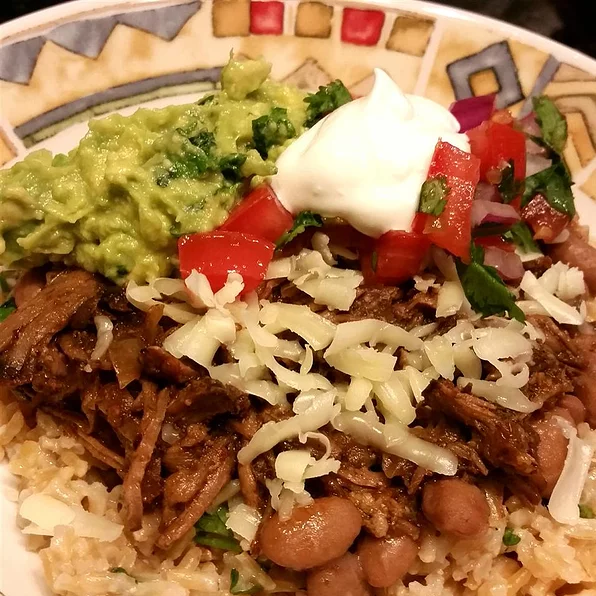

Chipotle Barbacoa

A chipotle flavored Barbacoa meal that goes great with rice
There is 25 minutes of prep time needed and 6 hours and 1 minute of cooking time neeeded. That totals
to 6hrs 26mins of time needed for the recipe. Following this ingredient list will yield 6 servings.
Ingredients
- 2 tablespoons vegetable oil
- 1 (2pound) beef chuck roast, trimmed and cut into 4 to 6 pieces
- 1/3 cup apple cider
- 4 chipotle peppers in adobo sauce
- 3 tablesppons lime juice
- 4 cloves garlic, peeled, or more to taste
- 4 teaspoons cumin
- 1 serrano chile pepper, chopped (Optional)
- 1 tablespoon ground cayenne pepper, or more to taset (Optional)
- 2 1/2 teaspoons dried oregano
- 1 teaspoon ground black pepper
- 1 teaspoon garlic powder
- 1/2 teaspoon salf
- 1/2 teaspoon ground cloves
- 1 cup chicken broth
- 1 small onion, finely choppped
- 3 bay leaves
Directions
-
Heat oil in a large skillet over low heat, gradually increasing heat to medium-high.
Add beef chuck pieces; cook until browned, about 10 seconds per side. Transfer beef to a slow cooker.
-
Combine apple cider, chipotle peppers, lime juice, garlic, cumin, serrano pepper,
cayenne pepper, oregano, black pepper, garlic powder, salt, and ground cloves in a blender or food processor; blend until smooth.
Pour over beef in the slow cooker.
-
Stir chicken broth, onion, and bay leaves into the slow cooker.
-
Cook on Low until beef is fork-tender, 6 to 8 hours. Shred beef using 2 forks.